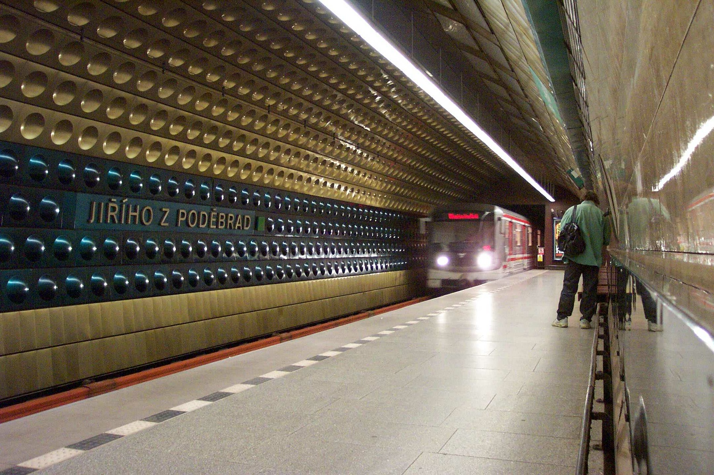

Výspa civilizace. Na první pohled vypadá dost zanedbaně. Schválně, co se tu dá dělat. Stanice není moc velká, vlastně se skládá jen ze skladiště, baru a doků. Přímo ze vstupního portálu odlétá raketoplán do přístavu na planetě.
Bar
Doky
